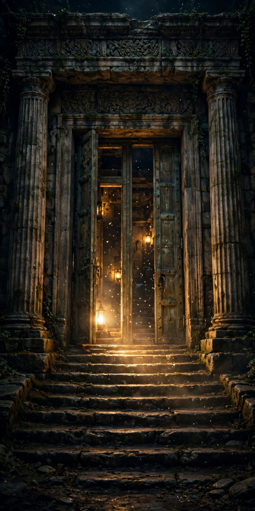
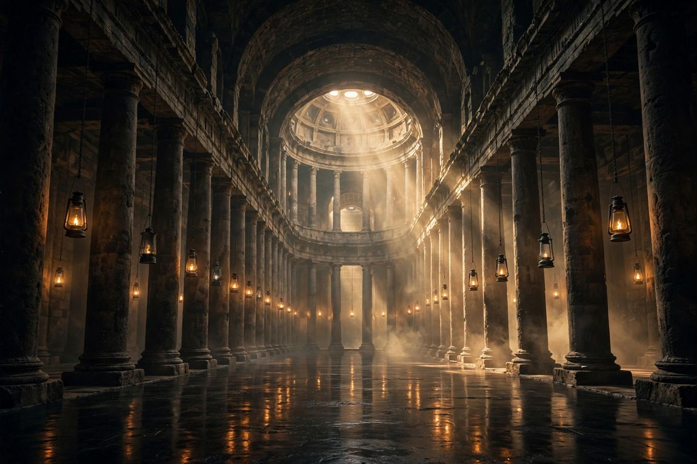

Eight Doors Into the Same House
Every one of them opens.
Est. in the keeping of the record
A free archive of the world’s sacred traditions — told well, and told honestly.
Told Well · And Told Honestly
Eighty-four chapters, eighty-nine objects in the Vault, one hundred ninety-nine figures in the Pantheon — and a building to walk them in. The doors are below.
Every one of them opens.


The Building at the Heart of the House
The Museum stands behind these doors — touch them and step inside.
Some things here answer to a touch. Take hold of each one, turn it in the light, and pass to the next.
Sixty lines of Old Babylonian cuneiform in which the god Enki tells Atrahasis how to build the boat: round, like a giant coracle. In Irving Finkel’s reading, the animals go in two by two.
A drawn sketch, not a photograph — the tablet’s own photographs are in its Vault entry, which is recently added and pending full review.
Read the Vault entry →Ways into the same history you can play. Every fact, fighter, and clue is drawn from a real chapter, some of them still marked “pending review” — play on a laptop or on your phone, and follow any thread back to its source.
These eleven games — from the fighter and the journal expedition to chess and the Excavation — also wait inside the Symbols, every fact in them sourced to a chapter (including chapters still pending review).
Not by region, nor by creed — but chronologically, so the traditions of any age may be read beside one another. Choose an age to enter.
See all nine ages → ✦ Open a chapter at random
Every account here is drawn from real texts and the present state of scholarship. Where the record is firm, it is set down plainly; where scholars still contend, the dispute is named rather than settled; where the evidence falls silent, we say so.
Every specific claim is checked against primary texts and current scholarship — never memory, never invented citations.
Where scholars contend, we lay the debate out and let it stand — we do not resolve open questions by quietly picking a side.
Where the evidence runs out, the chapter says so. Each one closes with what is supported, what is not, and what is genuinely unknown.
A claim being sacred to believers and a claim being historically verified are different statements — and we never blur them into one. Read the full method →
The Divine Archives is free to read and independent — no ads, no paywall, no agenda for sale.
If the keeping of it is of value to you, you can help keep the candle lit.
Follow the work
The archive grows one tradition at a time. Leave your email and I’ll send word when a new chapter goes up — no more than that.
No spam, ever. Unsubscribe in one click.